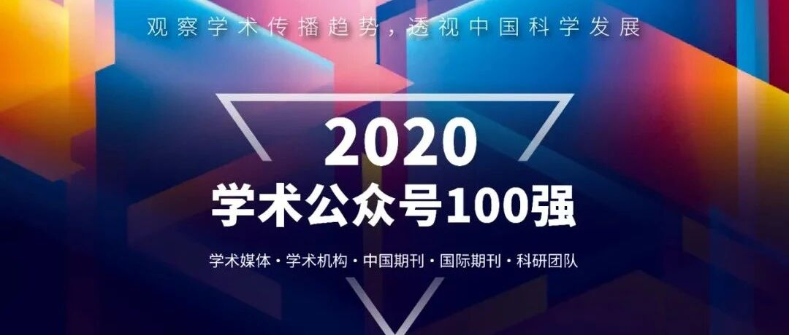
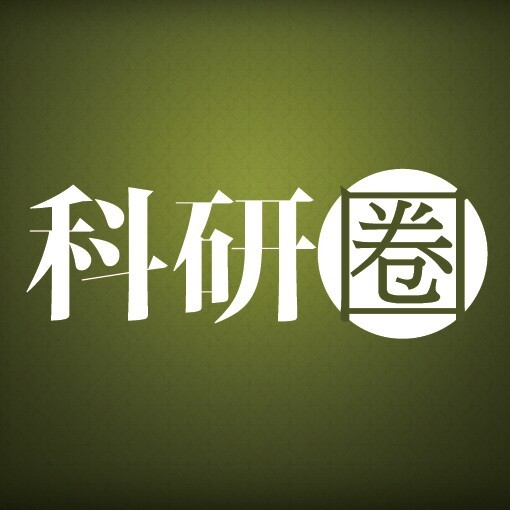

“2020学术公众号100强”重磅发布，“年度学术公众号Top10”开启投票
以下文章来源于科研圈 ，作者科研圈&领研网

《环球科学》杂志旗下综合性学术传播与服务平台。

这是一份聚焦学术传播的报告，也是观察中国科学发展的一个全新角度。
学术传播是科学发展的基石，它曾代表学者间的纸笔通信、会议沙龙和经典书籍，之后几乎与专业学术出版画上等号。而在一个开放、多元的数字时代，它的含义发生了改变：网络与社交平台成为了学术社群交流的新场景，学术创作不再局限于论文写作，媒介的多样化让研究者拥有了更丰富的表现舞台，学术出版业开始在新媒体中探索，个体学者、研究机构、科研团队也加入了学术传播的队列。
在中国，微信平台的学术公众号是这一场传播变革的引领者。
今天发布的“2020 学术公众号 100 强”（以下简称“100强”） 覆盖了微信公众平台上五类主要的学术传播平台——学术媒体公众号、学术机构公众号、中国期刊公众号、国际期刊公众号和科研团队公众号，它们从读者提名和主动报名参与“2020年度学术公众号”评选活动的共 800 多个公众号中产生。在其共同勾勒出的这幅新媒体学术传播图景中，我们发现了以下主要特征：
｜敏锐捕捉学界趋势，持续创新传播方法
学术公众号作为中国学者获取学术资讯的主要阵地之一，对读者的需求有着深入洞察，显示出了对于热点科学事件、学术生态变革的灵敏嗅觉。
2020 年，学术公众号成为微信公众平台上全面追踪疫情发展的主力军；同时，它们通过解读论文、组织学者进行公开分享，为提高重要研究的可见性作出卓越贡献；它们在微信公众平台积极倡导科学的开放、透明和可重复性，立足新兴的交叉前沿，传播交叉科学的创新思想；它们还致力于拓展学术传播的边界，用播客、社区、知识库、读书会等新的传播媒介和组织形式，持续提高学术传播的服务质量。
｜ 学科生态繁荣发展
学术公众号关注的学科领域越发完善，“100强”覆盖了包括信息科学与技术，医学，生物科学，化学、材料与能源，物理、天文与天体物理学，地球科学，土木、建筑与环境工程，环境科学与生态学，心理学，社会学，食品科学与技术，光学，农学与植物学，经济学，机械工程，药学，统计学与数学，动力与电力学，文献情报与图书馆学在内的 19 个垂直学科大类，显示出中国各领域研究者对于新媒体学术平台的需求与认可。我们同时发现，关注信息科学与技术，医学，生物科学，化学、材料与能源领域的优质公众号数量最多，这些领域在微信上的学术传播活动最为积极。

图1. “100强”公众号覆盖了信息科学与技术、医学、生物科学、化学材料与能源等 19 个垂直门类。其中学术媒体公众号和科研团队公众号覆盖了最广的学科光谱。
2020年，交叉科学已经在学术公众号生态中展现出不容忽视的影响力，“100强”中至少有 20 个公众号重点关注交叉学科，包括地理信息科学技术，社会计算，脑科学与神经科学，复杂系统科学，AI药物，计算生物学，计算化学，合成生物学，生物信息学，能源环境经济学等前沿领域（图2），而这其中，有 11 个是科研团队主办的学术公众号，它们已经成为交叉科学在微信平台的重要发声者。

图2. 主要关注交叉科学领域的 20 个公众号。它们分别由学术媒体（紫色）、学术机构（粉色）、中国期刊（黄色）和科研团队（蓝色）主办，其中来自科研团队的交叉学科公众号数量最多（11个）。
｜高水平大学引领高质量学术传播
“100 强” 的组织运营单位分属 58 个大学或研究机构，而高质量学术传播显示出了与高水平大学的密切关系，有 5 个公众号来自清华大学、4 个公众号来自北京师范大学、3 个公众号来自北京大学、3 个公众号来自浙江大学，其中 73% 由科研团队创办运营，展现出我国高水平大学科研人员从事新媒体学术传播的先进意识及水平。

图3. "100强"公众号显示出与高水平研究型大学的密切关系，其中 5 个公众号来自清华大学（左下，紫色），4 个公众号来自北京师范大学（左中，湖蓝色）、3 个公众号来自浙江大学（左上，天蓝色）、3 个公众号来自北京大学（红色）。
｜学术出版机构积极参与微信传播，中外期刊公众号各具特色
学术出版机构对微信公众平台的关注度持续提升，期刊和出版商利用新媒体扩大了自身影响力，提升了研究成果可见性，探索更贴近中国研究者需求的学术服务形式，助力学者生涯发展。
中外学术出版机构根据自身的不同优势，发展出了各具特色的微信公众号：中国本土期刊公众号大多由单一期刊的出版机构运营，数量众多，表现灵活，它们基于期刊各自的特点，发展出多样的传播和服务方式；而国际期刊的公众号大多由大型出版机构建立运营，它们利用品牌的集中化资源，以及在出版领域深厚的积淀，为读者提供了具有国际化视野的科学动态资讯和出版服务。
“2020 学术公众号 100 强” 代表了 2020 中国学术传播的中坚力量，涵盖了学术媒体、学术机构、中国期刊、国际期刊、科研团队五大公众号类别各自的 20 强。我们将从中最终评选出以下五大榜单：
2020 年度学术媒体公众号 Top10
2020 年度学术机构公众号 Top10
2020 年度中国期刊公众号 Top10
2020 年度国际期刊公众号 Top10
2020 年度科研团队公众号 Top10
我们诚邀读者为自己喜爱的学术公众号投上宝贵一票（点击此处投票），读者投票结果将与专家评审、传播影响力结果结合，决定五大榜单的最终 Top10 名单。

公众号 | 代表推文 |
AI科技评论 | |
集智俱乐部 | |
PaperWeekly | |
神经现实 | |
BioArt | |
材料科学与工程 | |
高分子科学前沿 | |
iPlants | |
纳米人 | |
研之成理 | |
DrugAI | |
OA2020 | |
OpenScience | |
再创｜Regenesis | |
机器之心 | |
量子位 | |
MedSci梅斯 | |
奇点网 | |
生物世界 | |
药明康德 |

公众号 | 主办方 | 代表推文 |
北京脑 | 北京脑科学与类脑研究中心 | |
两江科技评论 | 南京光声超构材料研究院 | |
IEEE电气电子工程师 | 电气电子工程师学会 | |
京师物理 | 北京师范大学物理学系 | |
京师心理大学堂 | 北京师范大学心理学部 | |
南山呼吸 | 广东省南山医药创新研究院 | |
求是风采 | 浙江大学学术委员会 | |
清华大学深圳国际研究生院 | 清华大学深圳国际研究生院 | |
全国地研联 | 全国地理学研究生联合会 | |
微软研究院AI头条 | 微软亚洲研究院 | |
细胞世界 | 中国细胞生物学学会 | |
香港城市大学 | 香港城市大学 | |
西南交大桥梁 | 西南交通大学桥梁工程系 | |
约翰霍普金斯医院 | 约翰霍普金斯医院 | |
智源社区 | 北京智源人工智能研究院 | |
中国科学院紫金山天文台 | 中国科学院紫金山天文台 | |
中科院地质地球所 | 中国科学院地质与地球物理研究所 | |
中科院高能所 | 中国科学院高能物理研究所 | |
中科院物理所 | 中国科学院物理研究所 | |
注册营养师服务号 | 中国营养学会 |

公众号 | 主办方 | 代表推文 |
测绘学报 | 测绘出版社 | |
储能科学与技术 | 化学工业出版社/中国化工学会 | |
电力系统自动化 | 国网电力科学研究院 | |
电网技术 | 《电网技术》杂志社 | |
钢结构 | 《工业建筑》杂志社 | |
环境工程 | 《工业建筑》杂志社 | |
机械工程学报 | 中国机械工程学会 | |
给水排水 | 《给水排水》杂志社 | |
净水技术 | 《净水技术》杂志社 | |
协和医学杂志 | 中国医学科学院北京协和医院 | |
遥感学报 | 中国科学院空天信息创新研究院 | |
园艺研究 | 南京农业大学 | |
浙大学报英文版 | 《浙江大学学报英文版》编辑部 | |
中国光学 | 中国科学院长春光学精密机械与物理研究所/Light学术出版中心 | |
中国激光杂志社 | 中国激光杂志社 | |
中国给水排水 | 《中国给水排水》杂志社 | |
中国科学杂志社 | 《中国科学》杂志社 | |
中国实用外科杂志 | 中国实用外科杂志社 | |
中国物理学会期刊网 | 中国物理学会期刊网 | |
中国循环杂志 | 《中国循环杂志》社 |

| 公众号 | 主办方 | 代表推文 |
| ACS美国化学会 | 美国化学会 | 点击阅读 |
| AG期刊 | AG期刊编辑部/国际地球化学协会 | 点击阅读 |
| 爱思唯尔Elsevier | 爱思唯尔 | 点击阅读 |
| BMC科研永不止步 | BMC | 点击阅读 |
| CellPress细胞科学 | 细胞出版社 | 点击阅读 |
| Frontiers开放科学平台 | Frontiers出版社 | 点击阅读 |
| IOP出版社 | 英国物理学会 | 点击阅读 |
| 柳叶刀TheLancet | 柳叶刀 | 点击阅读 |
| MaterialsViews | 威立 | 点击阅读 |
| MDPI开放数字出版 | MDPI | 点击阅读 |
| Nature Portfolio | Nature Portfolio | 点击阅读 |
| NEJM医学前沿 | 嘉会医学研究和教育集团/《新英格兰医学杂志》 | 点击阅读 |
| RCR期刊 | Resources, Conservation and Recycling期刊 | 点击阅读 |
| RSC英国皇家化学会 | 英国皇家化学会 | 点击阅读 |
| ScienceAAAS | 《科学》杂志/美国科学促进会 | 点击阅读 |
| Springer | 施普林格 | 点击阅读 |
| Wiley威立 | 威立 | 点击阅读 |
| 植物生物技术Pbj | 华中农业大学植物科学技术学院/Plant Biotechnology Journal | 点击阅读 |
| 爱思唯尔科研医学服务 | 爱思唯尔 | 点击阅读 |
| Springer Nature科研服务 | 施普林格 ·自然 | 点击阅读 |

公众号 | 主办方 | 代表推文 |
3E论文速递 | 清华大学环境学院王灿/地学系蔡闻佳联合课题组 | |
城市生物多样性和生态系统服务 | 清华大学城市生态研究组 | |
代谢学人 | 华东师范大学生命科学学院肥胖和代谢性疾病研究组 | |
高维度稳定同位素 | 南京大学国际同位素效应研究中心 | |
哈工大SCIR | 哈尔滨工业大学社会计算与信息检索研究中心 | |
江南大学油脂园地 | 江南大学食用油营养与安全科技创新团队 | |
流域面源污染控制与水环境修复 | 北京师范大学环境学院流域非点源污染过程学科团队（陈磊课题组） | |
陆新征课题组 | 清华大学土木工程系陆新征教授课题组 | |
气候变化经济学 | 英国伦敦大学学院气候变化经济学和低碳转型团队（米志付课题组） | |
RUC AI Box | 中国人民大学高瓴人工智能学院赵鑫课题组 | |
SelfMindnSocialBrain | 北京师范大学“自我研究组” | |
上海交大软件安全研究组GoSSIP | 上海交通大学密码与计算机安全实验室软件安全小组 | |
水生态健康 | 中国科学院城市环境研究所水生态健康研究组 | |
数字生态GuoLab | 北京大学城市与环境学院郭庆华课题组 | |
TsinghuaNLP | 清华大学自然语言处理与社会人文计算实验室 | |
王初课题组 | 北京大学化学与分子工程学院王初课题组 | |
未名时空 | 北京大学时空大数据与社会感知研究组 | |
学术头条 | 清华大学aMiner团队 | |
营养发现 | 浙江大学求是特聘教授王福俤团队 | |
YuLabSMU | 南方医科大学生物信息学系余光创课题组 |
1. 点击此处或“阅读原文”投票。
2. 每个微信用户只能投票 1 次。
3. 投票截止时间：2021 年 4 月 23 日 24:00。
4. 我们将抽取 10 位投票读者，赠送《环球科学》2021年新刊一本。